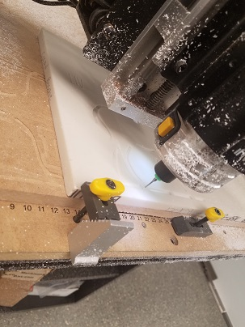
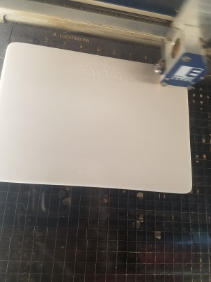
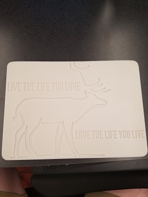
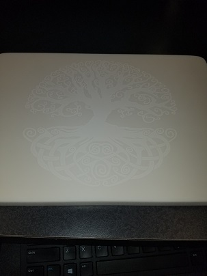
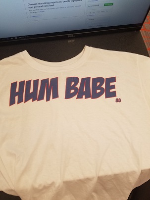
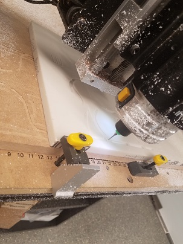
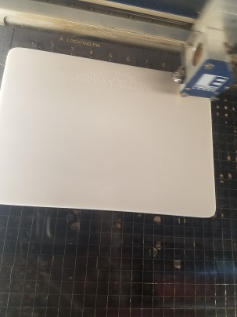
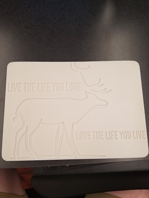
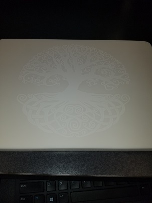
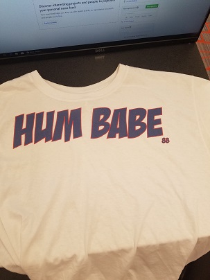

FINAL PROJECT
The production of your final project must utilize at least four different pieces of equipment and/ or significantly different process. It is highly recommended you discuss your project idea in advance with me to get permission for your final project. The preferred final project will involve four different pieces of equipment, but it is possible to submit multiple projects to meet this criteria. All final projects must be original in creation and not created by anyone else. It the work is not original, it will be considered a violation of our Honor Code. The project will be assessed based upon the quality, complexity, processes used, aestetics and functionality. You must create a separate page that documents how the project was created with multiple pictures documenting each step of the process. The page should model an Instructables page.
Assignment
1. Describe your project.
2. What equipment and materials did you use to create the project... I used corian, and t-shirt. I used CAD, the mill, the laser cutter, and the T-Shirt printer
5. What did you learn from this project? I learned how to mill out, material that can be used for a cutting board, and the software used to create it.
6. How much time did you spend working on the project... I spent approximatly 2 and a half full class periods working on my project
7. Please document each step of your project including photographs and include ALL project files.
First i used a software program that allowed me to design what i wanted to do, then i used the machine system to mill out my design. But then i went and created a T-shirt because my first final only used 3 out of 4 processes.
.jpg) 









Back to index